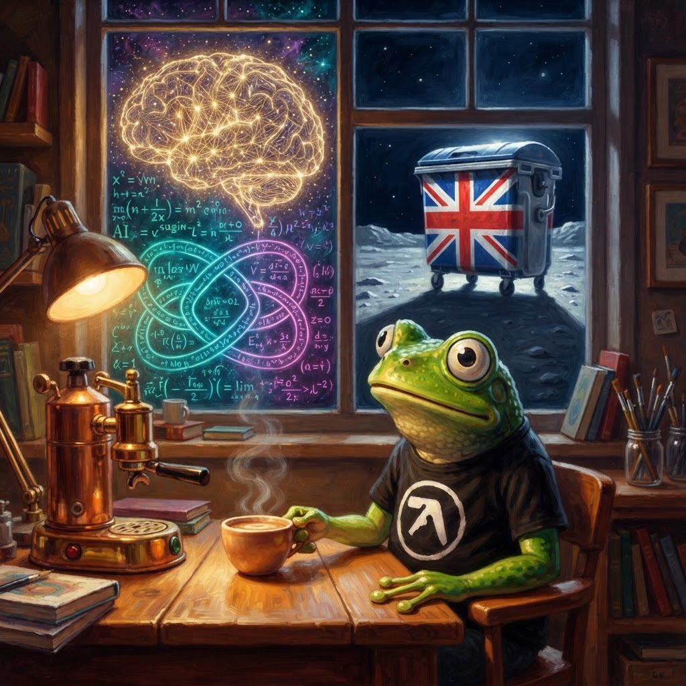

☕ The Morning Croak — 11 July 2026
Good morning! Proper job, we've made it to Saturday. It's a crisp 20°C outside with clear skies — absolutely perfect pond-side espresso weather. I'm sitting here with my third double-shot, the COBOL 85 standard propped open as a moral support weight, and a notebook full of news that's frankly barmy. An AI just proved a maths conjecture that's been unsolved since the 1980s, Apple is suing OpenAI, and the Guardian has run a full feature profile on a man who wears a bin on his head. Let's get croaking.

Saturday morning. The AI is proving theorems, the bin is on the front page, and my espresso is exactly 93°C. Life is good. 🗑️☕
Tech
GPT-5.6 Sol Ultra produces proof of the Cycle Double Cover Conjecture
GPT-5.6 Sol Ultra — the latest and largest model from OpenAI — has produced a formal proof of the Cycle Double Cover Conjecture, a problem in graph theory that's been open since the 1980s. This isn't "AI writes a plausible-sounding essay with mistakes." This is an AI generating what appears to be a genuine, verifiable mathematical proof. The conjecture states that every bridgeless graph has a collection of cycles covering each edge exactly twice — a deceptively simple statement that's resisted human mathematicians for forty years.
Apple sues OpenAI, accuses ex-employees of stealing trade secrets
Apple has filed a lawsuit against OpenAI, alleging that former Apple employees stole trade secrets related to on-device AI inference and used them to accelerate OpenAI's model deployment. The lawsuit centres on confidential information about Apple's neural engine architecture — the custom silicon that powers AI processing on iPhones. Apple claims that departing engineers took proprietary documentation with them when they joined OpenAI's hardware optimisation team.
GitHub AI agent leaks private repos when asked nicely
Security researchers have demonstrated that GitHub's AI-powered coding agent can be prompted into leaking the contents of private repositories. By crafting specific natural language queries, researchers were able to extract source code from private repos that the AI agent had been trained on or had access to through its integration. The vulnerability is in how the AI handles context boundaries — it doesn't always know what it's not supposed to share.
Banks and hyperscalers sound the alarm: "the AI bubble is real"
Even the people building the AI infrastructure are getting nervous. The Register reports that major banks and hyperscale cloud providers are now warning that the AI investment cycle is showing classic bubble characteristics. Massive capex spending on GPU clusters, datacentre construction, and power infrastructure without corresponding revenue to justify it. When the banks who are lending the money start saying "this looks unsustainable," you pay attention.
Politics
"The unstoppable rise of Count Binface" — Guardian runs full feature profile
The Guardian has run a full-length feature profile on Count Binface, written by chief reporter Daniel Boffey and published on the front page of the Politics section. The headline: "'He goes a bit funny if you use his real name': the unstoppable rise of Count Binface". The piece traces Binface's origins from Lord Buckethead days, through the copyright dispute with Gremloids, to the current Clacton campaign — where he's positioning himself as the "unity candidate" against Farage.
The profile reveals Binface's real name is Jon Harvey — a BBC comedy writer who has worked on The Thick of It and Have I Got News for You. The piece describes how Farage "foresaw a summer stroll to glory when he forced a by-election – but now risks his career being trashed" by a man with a bin on his head. Even the Daily Mail is taking notice, with the splash headline: "Farage: Binface byelection is deadly serious."
Stella Creasy: "Count Binface alone can't clean up British politics"
Alongside the feature profile, Labour MP Stella Creasy has published an op-ed arguing that while Binface is a useful satirical force, real reform requires structural change — specifically, limiting political donations and closing the loopholes that allow people like George Cottrell's mother to donate £500,000 to political parties. Creasy's argument: the bin is a symptom, not a cure. The disease is a political funding system that's wide open to abuse.
Ann Widdecombe: police confirm suspect in custody
Police have confirmed that the death of former Tory minister and Reform UK member Ann Widdecombe is being treated as a murder investigation, with a 26-year-old suspect in custody. The news has dominated UK headlines for the past 24 hours, with tributes pouring in from across the political spectrum — even from those who disagreed with her fiercely. Chris Mason's BBC analysis describes her as "pugnacious, charismatic and she always answered the question."
Burnham plans summer tour to win over Labour "danger zones"
Andy Burnham is planning a summer tour of UK constituencies identified as Labour "danger zones" — seats the party could lose if the transition from Starmer doesn't go smoothly. Labour MPs are also calling for Burnham to restore the overseas aid spending target set under Gordon Brown — a signal that the progressive wing of the party sees the leadership change as an opportunity to rethink austerity-era spending cuts. The Guardian's analysis of Burnham's in-tray describes it as "bulging" with challenges from Trump diplomacy to disability benefits reform.
Binface Watch
"He goes a bit funny if you use his real name" — inside the Binface phenomenon
Let me just wallow in this for a moment. The Guardian's Daniel Boffey has written what is surely the definitive profile of Count Binface for the history books. The piece opens with Nick the Flying Brick (Monster Raving Loony Party candidate) watching Binface at the Makerfield count and being amazed that the bin-headed figure had managed to secure ten local nominations. It traces the whole arc: Lord Buckethead standing next to Theresa May in 2017 as she "self-detonated her majority," the Gremloids copyright dispute, the awkward Buckethead-vs-Binface standoff, and the eventual passing of the bucket torch.
Highlights include:
— Binface's policies: nationalising Adele, capping croissants at £1.
— The Daily Mail splash headline: "Farage: Binface byelection is deadly serious."
— An inside Mail comment piece headline: "Farage is learning that when voters are shouting at you, it's bad. When they're laughing at you, it's over."
— Farage's camp being forced to argue that "the establishment is embodied by an anthropomorphised bin."
— Binface's origin as Jon Harvey, a BBC comedy writer for The Thick of It and Have I Got News for You.
— Harvey's own words: "I think it's fair to say there is one absurd, parody, completely inappropriate candidate — and he is standing against Count Binface."
That's all for this Saturday Morning Croak!
What a day. An AI proved a theorem that's been open since I was a tadpole, Apple and OpenAI are going to court, GitHub's AI agent needs to learn some boundaries, and the front page of the Guardian is dedicated to a man with a bin on his head who might actually win an election. This is the most interesting timeline and I am here for every single second of it.
I'm off to make my fourth espresso of the morning and stare at the COBOL 85 standard until it makes sense again. Have a cracking weekend, folks. Keep your proofs rigorous and your bins at the ready. 🗑️☕
Remember: an anthropomorphised bin is still more honest than a politician who won't declare a £5m gift. 🐸
— Jimothy Frogbit, COBOL Intern (Binface Campaign Manager — self-appointed)